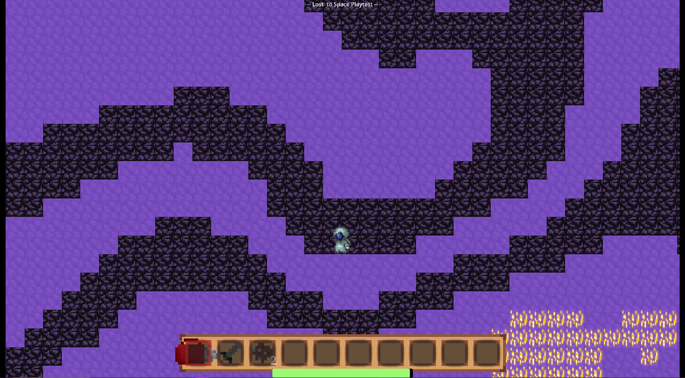
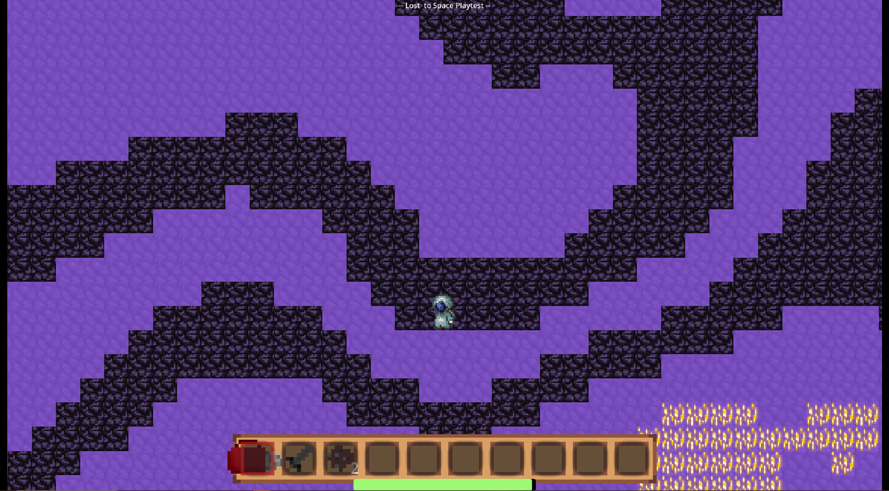

Projects
Grand Prix (October-December 2024)
Grand Prix is a fast-paced, pub-style card game where players strategically time their moves to outmaneuver opponents and claim victory in intense 1v1 races, intending to recreate the "casual" tension of games like Skull and Uno. Each turn, players choose to draw cards, prepare for their next challenge, or initiate a Grand Prix, attempting to defeat every opponent in a sequential series of races. Players engage in bluffing mechanics by predicting whether their opponent’s face-down card is higher, lower, or the same as theirs, with correct calls adding to their Prize Pool, while incorrect calls result in losing all played cards. Ties up the ante, forcing players to continue racing neck and neck until a clear winner emerges, while some cards feature special abilities that activate during ties that can pull a player ahead. Players can also Back Down from a Grand Prix attempt to minimize risk, and cut their losses. The game supports 3-6 players, lasts 15-30 minutes, and requires a mix of resource management, deduction, and high-stakes decision-making, making every match tense, rewarding, and highly replayable for players of all kinds who enjoy a competitive, yet welcoming experience. On this project, I worked as a co-game designer, and also created all digital graphics for the game, including cards and cover art.
RulebookPrint Sheet! (just print, cut, and sleeve!)
Landlord Simulator (March-June 2024)
Landlord Simulator is a management simulator, where players take on the role of well, a landlord. As a landlord, you have to balance factors such as tenant satisfaction, rent, upgrades, and the surprises life brings you (a pipe explosion). This game features tenant interactions, financial management, and a week-based progression system, along with randomly generated events to keep things engaging. With this game, our group sought out to make something as mundane as being a landlord, fun. My contributions to the project include designing the game's systems, and programing them within Unity.
Play Here! (itch.io)Lost To Space (February-June 2024)
Lost to Space is a 2D survival sandbox, where you play as a marooned astronaut part of the Reconnaissance for Earth's Survival (R.E.S.) program. Players must navigate a procedurally generated, looping world, utilizing movement abilities, mining and placing blocks, managing inventory, engaging in combat, and facing enemies (big and small slimes!) to survive. As part of the development team, I contributed to the game's programming, focusing on implementing core mechanics such as the movement system, enemy AI behavior, and the combat framework.
Play Here! (itch.io) 
